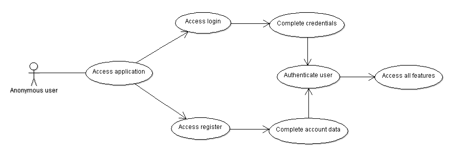

PhoS - Phobia Smart Assistent
0. Contributors
- Berea V. Emanuel-Vasile, Software Systems Engineering, 2nd year
- Serseniuc D. Simona-Ecaterina, Software Systems Engineering, 2nd year
1. Introduction
The purpose of this application is to help users better plan their activities.
The user is able to creat an acount and register his - if he has any - phobias. He will be able
to register persons that he is in contact with and their phobias.
When planning a future activity, the user will give a description of what the activity consist and he
will link the persons from his account with the activity and/or add new phobias.
The application will generate a list of suggestions and drugs based on phobias of the user and of his linked persons.
The application will be available in browser - desktop, tablet and phone.
PhoS (Phobia Smart Assistant)
- is a semantic web application
- help the user to create a profile and assign to himself phobias and activities
- manage a list of contact persons
- search for informations about a phobia and attach it to persons and activities
- attach a list of phobias and activities to each person
- display warnings and suggest remedies for an activity that take place for a set of persons
2. Use cases
As a user i want to:
- find information about a phobia
- register persons to my account
- atach to a person the phobias that he/she has
- get warnings and remedies about a created event
Bellow we present some UseCase diagrams

Login/Register Workflow
Search phobia Workflow
Person Workflow

Activity Workflow

Remedies Workflow
4. Tehnologies
4.1. Client
4.2. Server
- will expose a REST API developed using Symfony PHP framework
- PHP libraries that is used at this moment to interact (extract/serialize/convert) with the RDF data:
- Other PHP libraries that we could use for future development (kept as a reference):
The main modules of the server will be:
- Service - the classes that will access the Stardog database and Dbpedia
- Manager - the classes that will process the data that we get, after we run the SPARQL queries on the RDF stores
- Controller - controllers that will call the functions from the manager classes and expose the REST API
Symfony bundle (library) used for developing the REST API:
Other REST API related libraries, that we can use for future development (kept as a reference):
5. Data sources
Will use as data sources:
- Dbpedia: http://dbpedia.org/page/Category:Phobias
- our own RDF store:
- Stardog database
- will store data about phobias that it is imported from Dbpedia
- will store data about the users, the contact persons and the activities (event/context) that the persons can take part
- will use FOAF (Friend of a Friend) vocabulary to model the user relations: an application user can have many persons that he knows
- will use to store and model the various remedies, symptoms that can apply to a person that have a phobia
Concepts - schema.org
Bellow are the concepts that end up using in our application
6. Ontology
For this project we developed our custom ontology, and we modeled the relations between the persons,
phobias, activities, remedies and symptoms.
We have the following classes:
- Person
- Phobia
- Activity
- Remedy
- Symptom
We have created the following DatatypeProperty:
- description
- symptomName
- appearsFor
- forActivity
- hasPhobia
And we added the following ObjectProperty:
We did research on various phobias and review which are the possible remedies. We made a list with the data and populated our ontology.
Our remedies were based on a phobia and a type of activity associated with it.
We also have a list of possible symtopms that a person can have when having a phobia

7. Web API
See the yaml or the json version of the web API
On the server side we created a Symfony command which access via the EasyRdf library the SPARQL endpoint fro Dbpedia, and downloads all the phobias into our Stardog database.
We also created our custom ontology, which we also imported into Stardog. Then using Symfony framework and its FOSRestBundle we developed the REST API.
We decoupled and created 2 Service classes: DbpediaService and StardogService for the accessing the 2 RDF stores.
Then we created the Manager classes: PhobiaManager, RemedyManager and UserManager which are using the service classes and are querying via SPARQL the RDF stores that we are using.
Next, on top of that we are using controllers, which are receiving the HTTP request, call the manager classes, and the transform into JSON format the output and sent it as a HTTP response.
More details about the API can be viewed in the attached specification.
8. SparQL quries to access the RDF store
The main query that we made was to get the pbobias information from Dbpedia.
PREFIX dbo:
PREFIX foaf:
SELECT * WHERE {
?phobia rdfs:label ?label .
?phobia dbo:abstract ?info .
?phobia foaf:isPrimaryTopicOf ?link .
}
After that we inserted them in our Stardog database using this query:
PREFIX dbo:
PREFIX foaf:
INSERT DATA {
rdfs:label "' . $label .'";
dbo:abstract "' . $info . '";
foaf:isPrimaryTopicOf "' . $link . '" .
}
For our `User` and `Person` we used properties from foaf and some of our own datatypeProperties, as you can see below:
PREFIX foaf:
SELECT *
WHERE {
?person foaf:mbox ?email .
?person foaf:name ?name .
?person foaf:sha1 ?password .
FILTER (?email = "' . $email . '")
}
To update an user we had to remove all his information first and after that to add it again. That's how SparQL 1.1 works for an update.
PREFIX remedies:
DELETE WHERE {
foaf:mbox "' . $email .'";
foaf:name "' . $oldUser['name'] . '" .
}
DELETE WHERE {
remedies:hasPhobia "' . $phobia . '" .
}
INSERT DATA {
foaf:mbox "' . $email .'";
foaf:name "' . $requestData['name'] . '" .
}
To get the remedies for an activity we use the query bellow:
PREFIX remedies:
SELECT ?description WHERE {
?r remedies:forPhobia <' . phobia . '> .
?r remedies:forActivity "' activity . '" .
?r remedies:description ?description .
}